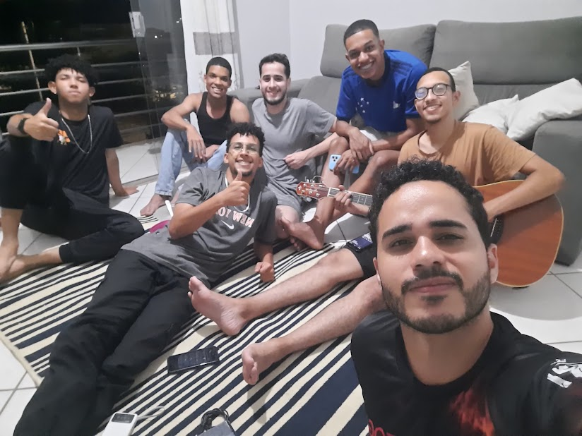
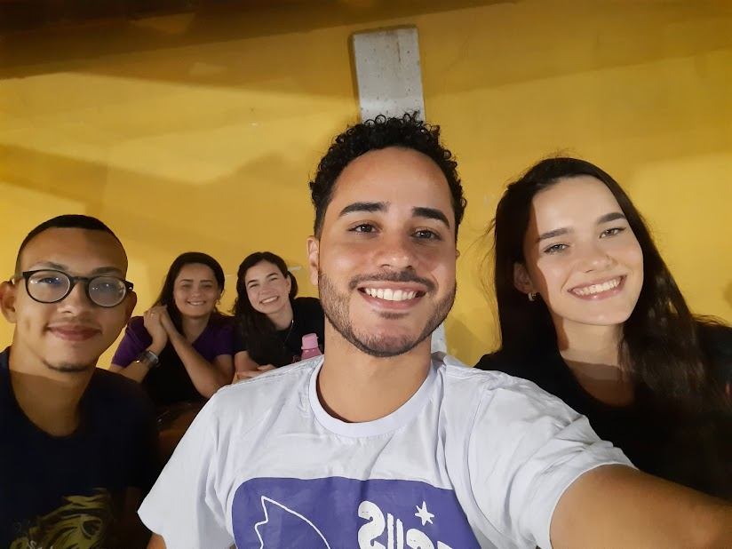
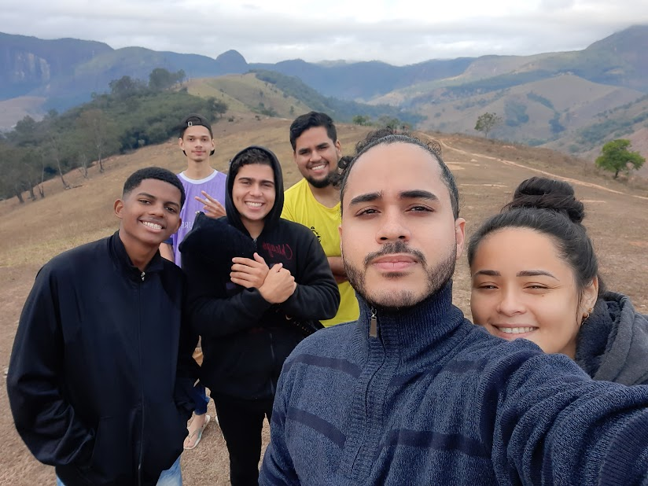

Ministério
Minha jornada ministerial na igreja tem sido uma experiência profundamente gratificante e
transformadora. Desde o momento em que senti o chamado de Deus, dediquei minha vida a servir
a Ele e à comunidade de fé.
Início do Chamado: Tudo começou quando percebi um forte desejo de ajudar e
guiar os outros em sua caminhada espiritual. Esse chamado foi confirmado através de orações,
conselhos de líderes espirituais e sinais claros de Deus em minha vida.
Desenvolvimento e Crescimento: Ao longo dos anos, participei de diversos
ministérios dentro da igreja, desde o ensino na escola dominical até a liderança de grupos
de jovens. Cada experiência me ajudou a crescer espiritualmente e a desenvolver habilidades
essenciais para o ministério, como a empatia, a paciência e a capacidade de ouvir.
Desafios e Vitórias: A vida ministerial não é isenta de desafios. Enfrentei
momentos de dúvida, dificuldades em conciliar o ministério com outras responsabilidades e
até críticas. No entanto, cada desafio foi uma oportunidade de crescimento e fortalecimento
da minha fé. As vitórias, por outro lado, foram inúmeras: ver vidas transformadas,
testemunhar milagres e sentir a presença de Deus em cada passo do caminho.
Impacto na Comunidade: Um dos aspectos mais gratificantes do meu ministério
tem sido o impacto positivo na vida das pessoas. Através de aconselhamentos, pregações e
ações sociais, pude ver a transformação na vida de muitos, o que me motiva a continuar
servindo com dedicação e amor.
Futuro e Esperança: Olhando para o futuro, continuo comprometido em seguir o
chamado de Deus, buscando sempre novas formas de servir e edificar a igreja. Minha esperança
é que, através do meu ministério, mais pessoas possam conhecer o amor de Cristo e
experimentar a transformação que só Ele pode proporcionar.
Testemunhos e Histórias: Ao longo da minha jornada, colecionei inúmeros
testemunhos e histórias inspiradoras. Desde famílias restauradas até jovens encontrando seu
propósito, cada história é um lembrete do poder de Deus em ação. Esses testemunhos não só
fortalecem minha fé, mas também servem como motivação para continuar meu trabalho
ministerial.
Parcerias e Colaborações: A vida ministerial também me proporcionou a
oportunidade de trabalhar em parceria com outras igrejas e organizações. Essas colaborações
ampliaram o alcance do meu ministério e permitiram que mais pessoas fossem impactadas pelo
amor de Cristo. Juntos, conseguimos realizar projetos sociais, eventos evangelísticos e
programas de apoio à comunidade.
Espiritualidade e Vida Pessoal: Manter uma vida espiritual saudável é
fundamental para o sucesso no ministério. Dedico tempo diário à oração, leitura da Bíblia e
meditação. Além disso, busco equilibrar minha vida ministerial com momentos de descanso e
lazer, garantindo que minha saúde física e emocional esteja em dia para servir melhor.